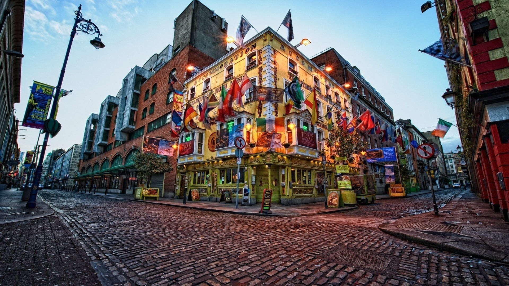
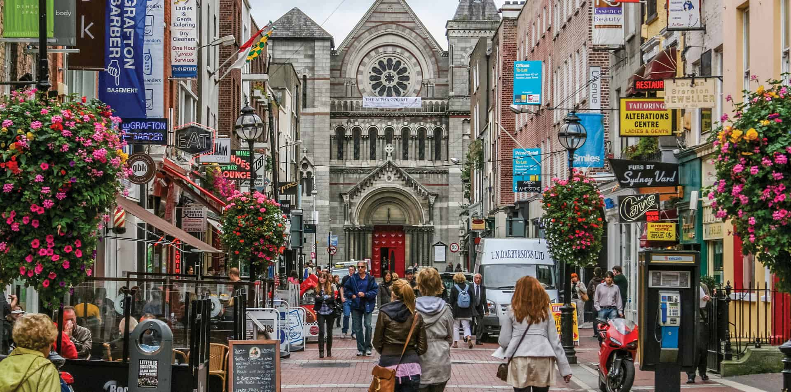

Dublin is a thriving city. It has a small-town feel with capital city amenities, including a great theatre and music scene.
Many people come to Dublin for the craic. Translating approximately to 'fun' or a place/activity with a certain buzz, the craic is not a drug, but the craic in Dublin is just as addicting.
The main advantage of living in a small country like Irelamd is that getting awaway for the weekend is not difficult. Dublin is just a few hours drive from the beaches of Donegal, the night life of
Belfast, the country roads of West cork or the festivals of Galway.

Ireland’s climate could be described as mild, moist and changeable. It certainly rains a bit.Dublin gets about 730mm (28 inches) of rain a year – more than London or Paris, less than Copenhagen or Munich. In the height of summer, the sun doesn’t set until almost 10pm.
Temperatures rarely drop below freezing and snow is uncommon except on high ground. The mercury tops out at about 20° Celsius in summer.

There’s a huge variety of recreational activities in Dublin. We’ve got mountains and sea within a stone’s throw of the city centre. There’s dozens of (mostly) free galleries & museums; year round festivals; bustling markets; delicious dishes in hundreds of restaurants.
It’d be remiss if we didn’t mention the almost thousand pubs across the county. From sports bars to music bars to bars that treat sports and music as unnecessary distractions, Publin.ie is the definitive guide.